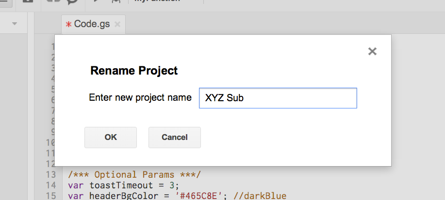

Instructions
- Create a new Google Docs spreadsheet.
- Select
Tools > Script editor.... - Select
Blank Project. - Paste the code from main.js. Update the global params as needed.
-
File > Save. Name your project.

- Select
Resources > Current project's triggers. - Click
Add a new trigger. Set a Time-driven trigger to send emails every morning. - Save your changes and authorize the app to send emails.
- Reopen the spreadsheet. You should now see a Subs menu.
- Setup your header rows and columns. The only requirement is that the first column contain dates.


=TEXT(A15, "E (MMM d)") as seen above.Rather Drive Stick?
If you prefer to not use the automatic generator, push a branch named gh-pages to your repository to create a page manually. In addition to supporting regular HTML content, GitHub Pages support Jekyll, a simple, blog aware static site generator written by our own Tom Preston-Werner. Jekyll makes it easy to create site-wide headers and footers without having to copy them across every page. It also offers intelligent blog support and other advanced templating features.
Authors and Contributors
You can @mention a GitHub username to generate a link to their profile. The resulting <a> element will link to the contributor's GitHub Profile. For example: In 2007, Chris Wanstrath (@defunkt), PJ Hyett (@pjhyett), and Tom Preston-Werner (@mojombo) founded GitHub.
Support or Contact
Having trouble with Pages? Check out the documentation at http://help.github.com/pages or contact support@github.com and we’ll help you sort it out.